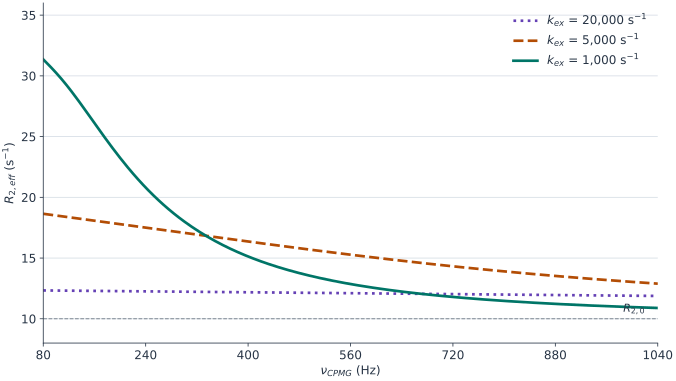
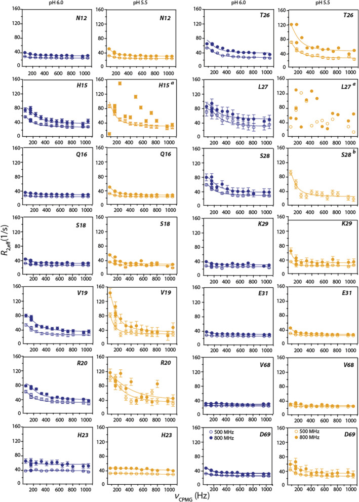

Case study 01 · Protein biophysics案例 01 · 蛋白质生物物理
Using mechanistic modeling to redesign a protein NMR experiment用机制建模重新设计蛋白质 NMR 实验
I identified why the initial measurements were unlikely to support useful analysis, explored the model in Excel, and persuaded the PI to adopt a lower-temperature experiment. I then fitted the new data, helping advance the study to publication.
我判断初始测量难以支持有价值的分析，随后在 Excel 中探索模型，并用科学依据说服 PI 采用低温方案。我负责新数据的拟合，推动研究完成并发表。
- Scientific system研究体系
- Calgranulin C / S100A12
- My role我的职责
- Model exploration, experimental strategy, fitting模型探索、实验方案与拟合
- Research output研究产出
- Protein Science · 2022 · e4403
Recognize the information bottleneck识别数据中的信息瓶颈
We were investigating how calgranulin C, an antimicrobial protein, exchanges between molecular conformations. CPMG NMR measures a response across different pulse frequencies; changes in that response can help estimate the rate and populations of exchanging states.
我们研究抗菌蛋白 calgranulin C 在不同分子构象之间的交换。CPMG NMR 通过改变脉冲频率观察响应变化，帮助估计构象交换的速率和各状态的布居。
The initial 37°C profiles were nearly flat. My PI suggested trying to fit the existing data. I judged that the limited variation would make it difficult to extract reliable exchange parameters. The immediate research decision was where to invest the next effort: further fitting, or measurements under more informative conditions.
初始 37°C 曲线接近平坦。PI 建议尝试拟合现有数据，而我判断，曲线变化太小，难以可靠提取交换参数。眼前需要决定的是下一步把精力投向哪里：继续拟合，还是寻找能提供更多信息的测量条件。
I prioritized improving the information in the experiment before further parameter extraction.
我选择优先提高实验的信息量，再进一步提取参数。
Trace the profile back to the model从曲线现象回到底层模型
I returned to the equations underlying CPMG relaxation dispersion and implemented them in Excel. Rather than adjusting fitting settings, I varied model parameters individually and inspected how each changed the predicted profile. This made the relationship between the physical process and the measured curve visible.
我从 CPMG 弛豫色散的底层公式入手，在 Excel 中实现计算。接着，我逐一改变模型参数，观察每个参数如何改变预测曲线。这让我能够直接看见物理过程与测量曲线之间的关系。
The distinction that mattered was between obtaining a numerical fit and obtaining parameters that the data meaningfully constrain. A curve with little variation can leave different parameter combinations difficult to distinguish. For this study, I wanted measurements with enough frequency-dependent change to support the analysis we needed.
我关心的是，数据能否真正约束拟合得到的参数。曲线变化很小时，不同参数组合可能难以区分。对于这个研究，我需要寻找能在测量频率范围内产生足够变化的条件，让后续分析具有依据。
Exchange rate stood out in the parameter exploration. In the regime I was considering, a high rate could produce an almost flat profile across the available frequency window. Reducing that rate could make the predicted dispersion more pronounced. This gave me a candidate explanation for the bottleneck and a direction for an experimental test.
参数探索显示，交换速率对曲线形态的影响尤其明显。在我当时考虑的区间内，较高的交换速率可能让曲线在可用频率窗口内接近平坦；降低速率则可能产生更明显的色散。由此，我得到了一个解释瓶颈的候选假说，以及可以通过实验检验的方向。
The model did not establish that the original flatness was caused by rapid exchange. It showed a plausible way to change what could be observed. My next step was to connect that model parameter to a controllable experimental condition. Temperature offered that connection because it affects molecular exchange kinetics and is straightforward to adjust.
模型并没有证明原始曲线平坦一定由快速交换造成，而是指出了一个可能改变可观测信号的途径。下一步，我需要把模型参数连接到可调控的实验条件。温度既能影响分子交换动力学，又便于调节，因此成为具体的实验切入点。
Figure 1. Why change the experimental conditions?图一：为什么改变实验条件？
Reconstructed model illustration重建的模型示意- Observation观察现象Nearly flat profiles limit exchange analysis.曲线接近平坦，限制交换分析。
- Model exploration模型探索Vary parameters to identify a plausible explanation.逐一改变参数，寻找候选解释。
- Experimental lever实验切入点Use temperature to test the exchange-rate hypothesis.用温度变化检验交换速率假说。
- Decision研究决策Collect at 25°C and 15°C, then fit the new data.采集 25°C、15°C 数据并拟合。

pA = 0.95 · Δω = 1,000 rad/s · R2,0 = 10 s⁻¹ · νCPMG = 80–1,040 Hz
Technical details and reproducibility技术细节与复现材料
Carver–Richards single-mode approximation with equal intrinsic R₂ in both states and ideal pulses. Frequency convention: νCPMG = 1/(4τcp), with Δω in rad/s. This is not an exact finite-time CPMG signal calculation or a fit. Greater dispersion alone does not establish that all parameters can be uniquely estimated. Lowering the rate does not always improve the profile, and temperature can also affect populations, chemical shifts and intrinsic relaxation.
采用 Carver–Richards 单模式近似，假定两个状态具有相同的固有 R₂，且脉冲理想。频率约定为 νCPMG = 1/(4τcp)，Δω 单位为 rad/s。这不是有限时间 CPMG 信号的精确计算或拟合。更明显的色散本身不代表所有参数都能被唯一确定；持续降低速率也不一定改善曲线，温度还可能影响布居、化学位移及固有弛豫。
Baldwin (2014): exact solution and Carver–Richards approximation

Make the case for a different experiment用模型依据推动新的实验方案
I proposed collecting additional measurements at 25°C and 15°C, below the initial 37°C condition. The rationale connected three things: a parameter that strongly influenced the modeled profile, an experimentally accessible way to affect that parameter, and an expected observation that could be checked in the new data.
我提出在初始 37°C 条件之外，追加 25°C 和 15°C 测量。依据是一条明确的推理链：找到显著影响模型曲线的参数，选择能影响该参数且便于调控的实验条件，再用新数据检验预期现象。
The expectation was that slowing exchange from the hypothesized regime could reveal more frequency-dependent variation and provide a better basis for fitting. This was an experimental hypothesis. Temperature can also change state populations, chemical shifts and intrinsic relaxation, so the resulting profiles still needed to be evaluated on their own evidence.
我的预期是，从假定的交换区间降低速率，可能产生更明显的频率依赖变化，为拟合提供更好的基础。这是一个需要检验的实验假说。温度也可能改变布居、化学位移和固有弛豫，因此新曲线仍须依据实际数据进行判断。
To secure agreement, I showed the PI the Excel curves first, explaining how exchange rate changed their shape. I then connected that result to temperature control and proposed the lower-temperature acquisitions. The model gave us a concrete basis for discussing why the additional experiment was worth doing. The PI accepted my recommendation.
为了推动方案落地，我先向 PI 展示 Excel 曲线，解释交换速率如何改变曲线形状；随后把这一结果连接到温度调控，提出低温采集方案。模型为讨论“为什么值得再做这个实验”提供了具体依据，最终 PI 采纳了我的建议。
I was responsible for the model exploration, experimental plan and fitting. A collaborator acquired the NMR data. Once the additional measurements were available, I fitted them; the lower-temperature profiles provided dispersion suitable for analysis and helped move the project forward. My contribution spanned the decision about what to measure and the analysis that followed.
我负责模型探索、实验方案和拟合，合作者负责 NMR 数据采集。获得新测量后，我完成后续拟合；低温曲线提供了适于分析的色散，推动项目继续开展。我的贡献贯穿了“下一步测什么”的决策与测量完成后的分析。
Evaluate the result and retain its limits用结果检验判断，保留结论边界
The study was published in Protein Science in 2022. It reports measurements at all three temperatures and two-site exchange analysis. The published 25°C profiles below show measured dispersion and fits for representative residues. They provide experimental evidence from the completed study, rather than a reconstruction of the initial dataset.
研究最终发表于 2022 年的 Protein Science，报告了三个温度的测量与两位点交换分析。下方已发表的 25°C 曲线展示代表性残基的实测色散与拟合，是研究完成后的实验证据。
This figure compares pH and magnetic-field conditions at one temperature. It is not a matched 37°C-to-25°C-to-15°C comparison and does not establish how much the rate changed on cooling. Quantifying that comparison would require the corresponding measurements and fitted parameters.
这张图比较同一温度下的 pH 和磁场条件，并非 37°C、25°C、15°C 的配对前后对照，也不能据此量化降温造成的速率变化。这样的定量比较需要相应测量与拟合参数。
Figure 2. What the completed measurements supported图二：完成后的测量支持了什么？
Published experimental data · 25°C已发表的实测数据 · 25°C
How to read the evidence怎样阅读这张证据图
These are real measurements for selected amino-acid residues after lowering the temperature to 25°C. V19 and T26, for example, show a clear upward rise toward the low-frequency end of the curve: visible relaxation dispersion that supports fitting. Points show measurements, error bars show reported uncertainty, and lines show fits where available.
此图展示降温至 25°C 后部分氨基酸残基的真实数据。例如，V19、T26 的曲线在低频端出现了明显的“抬头”，呈现出可用于拟合的弛豫色散。数据点表示实测值，误差棒表示报告的不确定性，曲线表示可获得的拟合。
Blue and orange distinguish pH 6.0 and 5.5. Open and filled symbols distinguish 11.7 and 18.8 T. All panels were acquired at 25°C.
蓝色与橙色区分 pH 6.0 和 5.5，空心与实心符号区分 11.7 和 18.8 T。所有面板均为 25°C 数据。
Other residues, such as V68, remain nearly flat. Possible explanations include a major-state population pA close to 1 or a small chemical-shift difference Δω; a flat profile alone does not distinguish these possibilities.
其他残基，例如 V68，仍未出现明显的“抬头”。可能的原因包括主态布居 pA 接近 1.0，或两态化学位移差 Δω 过小；仅凭平坦曲线尚不能区分这些可能性。
In this project, temperature control helped overcome the initial fitting bottleneck associated with the hypothesized overly rapid exchange, yielding profiles suitable for analysis in responsive residues. The remaining flat profiles show that residue-specific dynamics still influence what can be observed.
在本项目中，温度调控帮助我们突破了原先与假定的过快交换相关的拟合瓶颈，使有响应的残基获得了适于分析的曲线。仍然平坦的曲线则说明，残基本身的动力学特征依然影响可观测结果。
View original figure and caption ↗查看原图与图注 ↗Who did what个人与团队分工
My contribution我的贡献
Identified the information bottleneck, explored model parameters in Excel, developed and communicated the temperature-change rationale, designed the revised measurements, and fitted the resulting data.
识别测量信息不足的问题；在 Excel 中探索模型参数；提出并向 PI 解释降温依据；设计调整后的测量方案；完成数据拟合。
Collaboration协作分工
A collaborator acquired the NMR measurements. The PI adopted the revised strategy. The publication reflects the broader team's research contributions; this case describes my role in the modeling, experimental decision and fitting.
合作者完成 NMR 测量，PI 采纳调整后的策略。论文包含更广泛的团队贡献；本案例聚焦我在模型探索、实验决策及拟合中的工作。
Dynamic regulation of Zn(II) sequestration by calgranulin C
Wang Q, Kuci D, Bhattacharya S, Hadden-Perilla JA, Gupta R.
Protein Science (2022), 31(9), e4403.
A research decision I can explain能够解释依据的研究决策
This case captures how I work when results do not yet answer the question: identify the information gap, use the model to develop a testable explanation, and recommend an experiment with a clear rationale. I then follow the decision through to analysis, while keeping the individual contribution and limits of the evidence explicit.
这个案例展示了我面对尚不足以回答问题的数据时的工作方式：识别信息缺口，借助模型形成可检验的解释，再提出有明确依据的实验建议。我会继续负责后续分析，并清楚说明个人贡献与证据边界。
The decision sequence and division of work are my retrospective account. The figures distinguish a newly reconstructed simulation from published experimental data.
决策过程与工作分工来自我对经历的回顾。两张图分别标明新重建的模拟与已发表的实测数据。